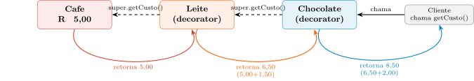
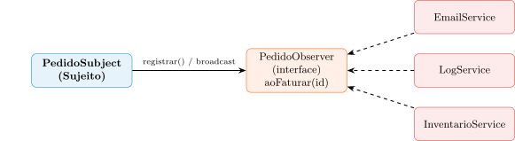
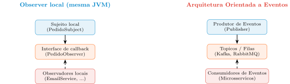

Aula 13 — Programação Orientada a Objetos
2026-09-16
Aula 12 fechou o tríptico interno (dado, gênese, fluxo) e abriu a primeira fronteira externa com o Adapter.
Hoje, duas peças finais compartilham um mesmo espírito: trocar uma decisão de compilação por uma decisão de execução — mas para dois problemas diferentes.
Problema 1 — um único objeto: como acumular responsabilidades opcionais (leite, chocolate, chantilly) sem repetir a explosão combinatória da herança (Aula 10)? Resposta: o Decorator.
Problema 2 — vários objetos: como um Pedido avisa e-mail, log e estoque de que foi faturado, sem conhecer cada um deles por nome? Resposta: o Observer.
Roteiro: a explosão combinatória → a estrutura do Decorator → o mundo real (java.io) → o perigo do acoplamento de notificação → a estrutura do Observer → Push/Pull → do local ao distribuído.
Uma cafeteria vende Cafe e quer oferecer adicionais independentes: Leite, Chocolate, Chantilly.
Resolver por herança exige uma subclasse por combinação, não por adicional.
Para \(N\) adicionais independentes, a herança exige \(2^N\) subclasses — com 10 adicionais, mais de mil classes.
Mesma assinatura de problema: comportamentos opcionais, cumulativos e decididos em tempo de execução — herança falha porque fixa a combinação em tempo de compilação.
Diferença em relação ao Strategy (Aula 10): lá, o Contexto trocava um algoritmo por outro. Aqui, o cliente quer acumular várias responsabilidades sobre o mesmo objeto, em quantidade e ordem decididas em runtime.
Se a cafeteria decidir oferecer 5 adicionais independentes (Leite, Chocolate, Chantilly, Canela, Mel), quantas classes distintas a estratégia de herança estática exigiria para representar todas as combinações possíveis — e o que esse número revela sobre por que “adicionar mais uma subclasse quando precisar” nunca é uma resposta sustentável nesse cenário?
Escreva sua resposta e compare com um colega antes de avançar (2 min).
Apolice.Quantas classes, e o que isso revela — Resposta
Apolice — mesma assinatura estrutural do problema, domínio diferente.Voltando à pergunta: \(2^5 = 32\) classes seriam necessárias — e esse número, muito maior do que os 5 adicionais em si, revela que o problema não é “faltam subclasses”, é que modelar cada combinação como uma classe é, por construção, insustentável assim que o número de eixos independentes cresce. O bloco seguinte mostra a saída: parar de modelar combinações como classes.
Tratar adicionais não como subclasses, mas como envelopes (wrappers) em torno do objeto original.
Dualidade de tipos: o Decorator É-UM (implementa a mesma interface) e TEM-UM (contém uma instância dessa interface) — estrutura de “cebola”.
Como núcleo e envelopes assinam a mesma interface, o cliente não sabe quantas camadas foram empilhadas — chama getCusto() na camada mais externa e a execução acumula os valores recursivamente até o centro.
“Anexar responsabilidades adicionais a um objeto de maneira dinâmica. O Decorator fornece uma alternativa flexível à herança para extensão de funcionalidades.”
public interface Bebida {
double getCusto();
String getDescricao();
}
public class Cafe implements Bebida {
public double getCusto() { return 5.0; }
public String getDescricao() { return "Cafe"; }
}
public abstract class BebidaDecorator implements Bebida {
protected Bebida bebidaDecorada;
public BebidaDecorator(Bebida b) { this.bebidaDecorada = b; }
public double getCusto() { return bebidaDecorada.getCusto(); }
public String getDescricao() { return bebidaDecorada.getDescricao(); }
}BebidaDecorator obriga a passar uma Bebida no construtor e faz repasse puro por padrão — o coração técnico do padrão.
Leite e Chocolatepublic class Leite extends BebidaDecorator {
public Leite(Bebida b) { super(b); }
@Override
public double getCusto() { return super.getCusto() + 1.50; }
@Override
public String getDescricao() { return super.getDescricao() + ", Leite"; }
}
public class Chocolate extends BebidaDecorator {
public Chocolate(Bebida b) { super(b); }
@Override
public double getCusto() { return super.getCusto() + 2.00; }
}getCusto() chama super.getCusto() — delega para quem estiver dentro (Cafe ou outro decorador) e soma seu próprio acréscimo. Estratégia puramente recursiva.
new Chocolate(new Leite(new Cafe()))
A chamada desce (tracejado) até Cafe; o valor sobe (colorido) acumulando cada acréscimo — nenhuma camada precisa saber quantas outras existem abaixo ou acima dela.
PedidoFileInputStream é o componente concreto (leitura crua, lenta); BufferedInputStream é o decorador (buffer de memória, mesma interface InputStream).
Em vez de uma classe rígida BufferedFileInputStream, a Sun criou um decorador genérico — funciona sobre arquivos, sockets, ou qualquer InputStream futuro, de forma intercambiável.
NotificadorComLog e NotificadorComRetrypublic interface Notificador {
void enviar(String mensagem);
}
public abstract class NotificadorDecorator implements Notificador {
protected Notificador notificadorDecorado;
public NotificadorDecorator(Notificador n) { this.notificadorDecorado = n; }
@Override
public void enviar(String mensagem) { notificadorDecorado.enviar(mensagem); }
}
public class NotificadorComLog extends NotificadorDecorator {
public NotificadorComLog(Notificador n) { super(n); }
@Override
public void enviar(String mensagem) {
System.out.println("[LOG] Tentando enviar: " + mensagem);
super.enviar(mensagem);
}
}Mesma estrutura de Bebida/BebidaDecorator — mas evoluir os requisitos de notificação (log, depois retry) por herança geraria a mesma explosão da cafeteria.
NotificadorComRetry e a Montagem da Cadeiapublic class NotificadorComRetry extends NotificadorDecorator {
private int maxTentativas;
public NotificadorComRetry(Notificador n, int maxTentativas) {
super(n);
this.maxTentativas = maxTentativas;
}
@Override
public void enviar(String mensagem) {
for (int t = 1; t <= maxTentativas; t++) {
try { super.enviar(mensagem); return; }
catch (RuntimeException e) { System.out.println("Falha na tentativa " + t); }
}
}
}
Notificador notificador = new NotificadorComRetry(
new NotificadorComLog(
new NotificadorEmail()), 3);Como NotificadorComRetry está na camada mais externa, cada tentativa reexecuta super.enviar() — o NotificadorComLog interno — então o log dispara a cada tentativa, não uma vez só.
Ao contrário do custo aditivo da bebida (comutativo), aqui a ordem das camadas muda o comportamento observável: log fora do retry registraria uma única vez, antes de qualquer tentativa.
Se, no exemplo do NotificadorComRetry envolvendo um NotificadorComLog que por sua vez envolve um NotificadorEmail, o método enviar() for chamado na camada mais externa, em que ordem exatamente a lógica de cada camada é executada — e o que essa ordem revela sobre por que o cliente nunca precisa saber quantas camadas existem?
Escreva sua resposta e compare com um colega antes de avançar (2 min).
BebidaDecorator não implementasse a interface Bebida, mas apenas contivesse uma referência interna a um objeto Bebida, ainda seria possível empilhar Leite sobre Chocolate da mesma forma transparente que o padrão Decorator permite hoje.Cafe puro (sem nenhum decorador aplicado) tiver seu getCusto() chamado diretamente, o resultado é idêntico ao que se obteria encadeando zero decoradores em torno dele — o caso de zero camadas de wrapping é apenas o caso degenerado da mesma recursão.Bebida, com cada estilo implementado como uma classe que envolve o texto anterior.BufferedInputStream decora qualquer InputStream, incluindo outro BufferedInputStream já aplicado, envolver um fluxo já bufferizado com um segundo BufferedInputStream automaticamente dobra a velocidade de leitura, já que dois buffers armazenam mais dados que um.Por que a ordem de execução importa aqui — Resposta
BebidaDecorator não implementasse a interface Bebida, mas apenas contivesse uma referência interna a um objeto Bebida, ainda seria possível empilhar Leite sobre Chocolate da mesma forma transparente que o padrão Decorator permite hoje — falso: sem implementar Bebida (o lado É-UM), o decorador não poderia ser passado como argumento para outro decorador nem tratado polimorficamente pelo cliente; a transparência exige as duas relações ao mesmo tempo.Cafe puro (sem nenhum decorador aplicado) tiver seu getCusto() chamado diretamente, o resultado é idêntico ao que se obteria encadeando zero decoradores em torno dele — o caso de zero camadas de wrapping é apenas o caso degenerado da mesma recursão — a recursão sempre termina no objeto núcleo; com zero decoradores, a “recursão” é trivialmente a própria chamada direta.Bebida, com cada estilo implementado como uma classe que envolve o texto anterior — exemplo clássico de transferência do mesmo mecanismo de composição em camadas.BufferedInputStream decora qualquer InputStream, incluindo outro BufferedInputStream já aplicado, envolver um fluxo já bufferizado com um segundo BufferedInputStream automaticamente dobra a velocidade de leitura, já que dois buffers armazenam mais dados que um — falso: a flexibilidade estrutural do Decorator (poder envolver qualquer InputStream, inclusive outro decorador) não implica que toda composição traga benefício real; dois buffers redundantes tendem a só adicionar overhead de cópia, sem ganho de desempenho proporcional.Voltando à pergunta: a chamada desce do mais externo (NotificadorComRetry) para o mais interno (NotificadorEmail), e cada camada só conhece a próxima camada imediatamente interna — nunca o topo nem o fundo completo da pilha. É exatamente essa “cegueira” de cada camada sobre o resto da cadeia que permite ao cliente empilhar (ou reordenar) decoradores livremente sem que nenhuma classe precise saber quantas outras existem.
public class Pedido {
private EmailService email;
private LogService log;
private InventarioService inventario; // Dependencias rigidas
public void fecharPedido() {
System.out.println("Pedido faturado.");
// EFEITO CASCATA: acoplamento com subsistemas perifericos
email.enviarConfirmacao();
log.registrarEvento();
inventario.baixarEstoque();
}
}Se o marketing exigir um SMS após o pedido, a classe Pedido precisa ser modificada — violação direta do OCP (Aula 10).
O núcleo de negócio (Pedido) conhece detalhes de infraestrutura (e-mail, log, estoque) que não deveriam dizer respeito a ele.
Diferença para a cadeia de notificadores: ali era um objeto acumulando responsabilidades (Decorator). Aqui são múltiplos objetos independentes que o Pedido precisa conhecer e chamar diretamente — problema que o Decorator não resolve.
O padrão que resolve esse acoplamento é o Observer.
“Definir uma dependência um-para-muitos entre objetos, de modo que quando um objeto muda de estado, todos os seus dependentes são notificados e atualizados automaticamente.” (GoF)
Sujeito (Subject): detém o estado de interesse, mantém uma lista abstrata de interessados.
Observadores (Observers): assinam uma interface comum, sem que o Sujeito conheça sua classe concreta.
Inversão de controle: o Sujeito não manda os outros trabalharem — ele avisa que um evento ocorreu.
public interface PedidoObserver {
void aoFaturar(String pedidoId);
}
public class EmailService implements PedidoObserver {
public void aoFaturar(String id) { System.out.println("E-mail enviado para " + id); }
}
public class PedidoSubject {
private List<PedidoObserver> observadores = new ArrayList<>();
public void registrar(PedidoObserver o) { observadores.add(o); }
public void faturar(String id) {
System.out.println("Processando regras de negocio do pedido...");
for (PedidoObserver o : observadores) {
o.aoFaturar(id); // Notificacao abstrata em broadcast
}
}
}observadores guarda referências à interface PedidoObserver, nunca à classe concreta — faturar() cuida só da regra de negócio, o broadcast vem depois.

Remover o envio de e-mails exige só deixar de registrar EmailService na inicialização — PedidoSubject permanece intacto: pleno respeito ao OCP.
Push: o Sujeito empacota os dados nos parâmetros do método (aoFaturar(id, valor)). Simples para o observador, mas rígido — novos dados exigem mudar a assinatura e quebrar observadores existentes.
Pull: o Sujeito envia só sua própria referência (update(pedido)); o observador consulta o que precisa via getters. Flexível a longo prazo, mas cria acoplamento bidirecional — o observador precisa conhecer a API pública do sujeito.
O Observer opera dentro da memória de um único processo (JVM). Ao mover o conceito para a rede, ele se torna a base das Arquiteturas Orientadas a Eventos (EDA).
| Observer local | Arquitetura Orientada a Eventos |
|---|---|
| Sujeito local | Produtor de Eventos |
| Interface de callback | Tópicos / Filas |
| Observador local | Consumidor de Eventos / Microsserviço |
“O Observer é o átomo fundamental que viabiliza sistemas reativos distribuídos.”

Mesmo princípio arquitetural — emissor, canal de anúncio, assinantes — só as ferramentas mudam de escala.
Se um novo tipo de observador precisar, no futuro, de um dado que hoje não está entre os parâmetros enviados pelo modelo Push atual (por exemplo, o valor total do pedido), o que precisa mudar no sistema — e por que essa mesma pergunta, respondida de outro jeito, é exatamente o argumento a favor do modelo Pull?
Escreva sua resposta e compare com um colega antes de avançar (2 min).
PedidoSubject usasse o modelo Pull (passando apenas a própria referência para update(PedidoSubject pedido)) em vez do modelo Push, adicionar um observador que precisa do valor total do pedido não exigiria alterar a assinatura do método de notificação já usado pelos observadores existentes.PedidoSubject crescer para um valor muito grande, o Pedido (o Sujeito) continua sem precisar conhecer o tipo concreto de nenhum deles, porque o for de broadcast opera apenas sobre a interface PedidoObserver.PedidoSubject e seus observadores.O que muda ao adicionar um novo observador — Resposta
PedidoSubject usasse o modelo Pull (passando apenas a própria referência para update(PedidoSubject pedido)) em vez do modelo Push, adicionar um observador que precisa do valor total do pedido não exigiria alterar a assinatura do método de notificação já usado pelos observadores existentes — exatamente a vantagem do Pull: o observador extrai o que precisa via getters, sem forçar mudança na assinatura do callback.PedidoSubject crescer para um valor muito grande, o Pedido (o Sujeito) continua sem precisar conhecer o tipo concreto de nenhum deles, porque o for de broadcast opera apenas sobre a interface PedidoObserver — o desacoplamento não depende da quantidade de observadores, só da abstração usada na lista.PedidoSubject e seus observadores — mesma estrutura publicador-assinante, domínio diferente.Voltando à pergunta: com o modelo Push atual, adicionar um observador que precisa de um dado novo exigiria mudar a assinatura de aoFaturar() e, com isso, quebrar todos os observadores existentes que não esperam esse parâmetro extra. É exatamente esse custo que o modelo Pull evita — trocando simplicidade imediata por resiliência a mudanças futuras nos dados exigidos pelos observadores.
Pedido diretamente a EmailService/LogService/InventarioService viola o OCP a cada canal de notificação novoPróxima aula: a síntese arquitetural do curso — fronteiras entre núcleo estável e periferia volátil, e uma matriz de decisão comparando Strategy, Adapter, Decorator e Observer.
UNICAMP — Instituto de Computação